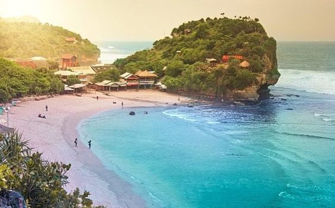

Wisata Nganjuk
Panduan Wisata Lengkap Untuk Kabupaten Nganjuk

Popular Destinations

Watu Lawang
Relief yang indah dan detail, menceritakan kisah Ramayana dan Krishnayana Arsitektur yang unik, dengan dua bangunan kembar tanpa atap.
Starting from Rp.30,000

Candi Ngetos
Candi Ngetos adalah candi Hindu peninggalan Kerajaan Majapahit yang terletak di Nganjuk, Jawa Timur. Dibangun pada abad ke-15, candi ini terbuat dari batu andesit dan dipercaya sebagai tempat pendharmaan Raja Hayam Wuruk.
Starting from Rp.15,000

Waduk Perning
Waduk Perning adalah sebuah waduk yang terletak di Kabupaten Nganjuk, Jawa Timur. Waduk ini memiliki luas 767 hektare dan berfungsi sebagai sumber irigasi, pembangkit listrik tenaga air (PLTA), dan objek wisata.
Starting from Rp.10,000